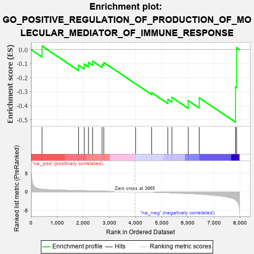
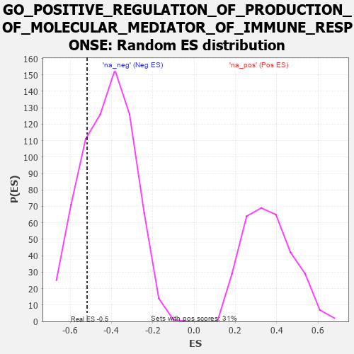

| | | Dataset | 7d |
| Phenotype | NoPhenotypeAvailable |
| Upregulated in class | na_neg |
| GeneSet | GO_POSITIVE_REGULATION_OF_PRODUCTION_OF_MOLECULAR_MEDIATOR_OF_IMMUNE_RESPONSE |
| Enrichment Score (ES) | -0.5175947 |
| Normalized Enrichment Score (NES) | -1.2361504 |
| Nominal p-value | 0.22222222 |
| FDR q-value | 0.5660535 |
| FWER p-Value | 1.0 |
Table: GSEA Results Summary

Fig 1: Enrichment plot: GO_POSITIVE_REGULATION_OF_PRODUCTION_OF_MOLECULAR_MEDIATOR_OF_IMMUNE_RESPONSE
Profile of the Running ES Score & Positions of GeneSet Members on the Rank Ordered List
| PROBE | GENE SYMBOL | GENE_TITLE | RANK IN GENE LIST | RANK METRIC SCORE | RUNNING ES | CORE ENRICHMENT | | 1 | MLH1 | | | 423 | 0.679 | 0.0254 | No |
| 2 | MSH2 | | | 1819 | 0.334 | -0.1114 | No |
| 3 | HMCES | | | 2036 | 0.300 | -0.1038 | No |
| 4 | ATAD5 | | | 2197 | 0.277 | -0.0918 | No |
| 5 | MIF | | | 2357 | 0.252 | -0.0826 | No |
| 6 | DDX1 | | | 2718 | 0.196 | -0.1052 | No |
| 7 | NSD2 | | | 2784 | 0.185 | -0.0919 | No |
| 8 | DDX58 | | | 3998 | -0.007 | -0.2435 | No |
| 9 | GATA3 | | | 4614 | -0.120 | -0.3069 | No |
| 10 | DDX21 | | | 5231 | -0.252 | -0.3551 | No |
| 11 | FZD5 | | | 5386 | -0.292 | -0.3406 | No |
| 12 | XBP1 | | | 6011 | -0.475 | -0.3641 | Yes |
| 13 | MALT1 | | | 6432 | -0.634 | -0.3435 | Yes |
| 14 | TRAF6 | | | 7818 | -2.157 | -0.2680 | Yes |
| 15 | TRAF2 | | | 7861 | -2.481 | 0.0138 | Yes |
Table: GSEA details [plain text format]

Fig 2: GO_POSITIVE_REGULATION_OF_PRODUCTION_OF_MOLECULAR_MEDIATOR_OF_IMMUNE_RESPONSE: Random ES distribution
Gene set null distribution of ES for GO_POSITIVE_REGULATION_OF_PRODUCTION_OF_MOLECULAR_MEDIATOR_OF_IMMUNE_RESPONSE